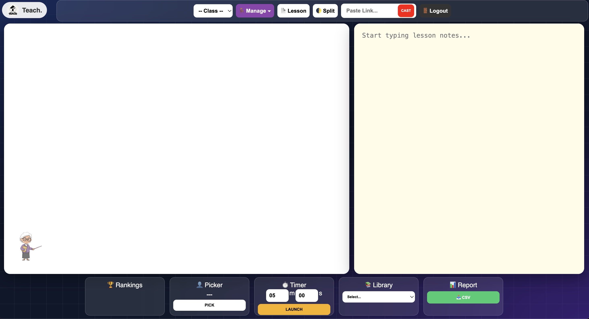
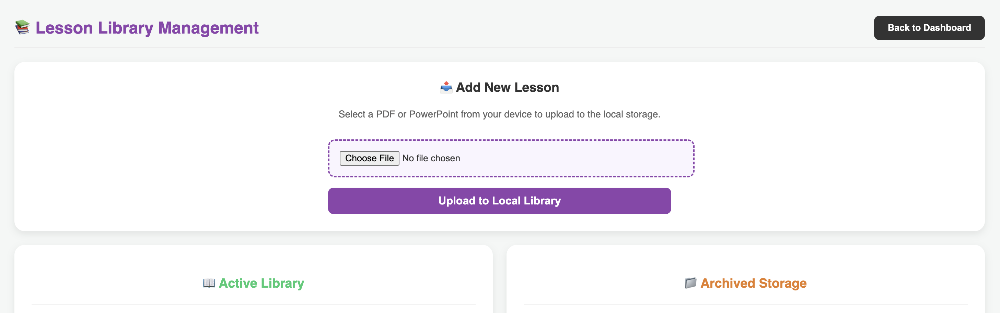

TEACH: Local-First Classroom Management System
Problem Statement
In many educational environments, unreliable or non-existent internet connectivity severely limits the effectiveness of digital learning tools and classroom management applications. Teachers often struggle with real-time data entry, behavior tracking, and access to student records when an internet connection cannot be guaranteed. This digital divide hinders efficient classroom operations and equitable access to modern educational resources.
My Role & Work
- Sole Full-Stack Developer: Independently designed, developed, tested, and deployed the TEACH application from concept to implementation.
- Project Planning & System Design: Defined the project goals, core features, user workflows, and overall system architecture based on the need for a reliable classroom management tool.
- Local-First Architecture: Designed the application to support reliable use even when internet connectivity is limited or unavailable, helping teachers continue classroom tasks without disruption.
- Front-End Development: Built the user interface with a focus on simplicity, responsiveness, and ease of use for teachers managing classroom records and student information.
- Back-End Development: Developed the server-side functionality needed to handle application data, support user interactions, and manage communication between the client and server.
- Data Management: Implemented structured data handling for classroom records, student information, behavior tracking, and other teaching-related features.
- Testing & Debugging: Tested the application across different scenarios, identified issues, and resolved bugs related to functionality, deployment, service workers, caching, and user experience.
- Deployment & Maintenance: Deployed the application to Heroku, configured the project for public access, and continued refining the system based on testing results and technical requirements.
- Documentation & Portfolio Integration: Prepared supporting materials including screenshots, project descriptions, technical explanations, and portfolio content to clearly present the purpose and impact of TEACH.
TEACH Screenshots & Feature Demonstrations
The following screenshots demonstrate the main features of TEACH, including user authentication, classroom setup, student roster management, behavior tracking, learning materials, casting tools, ranking, and classroom activity features.

Login and Registration
This screen allows users to log in or register for an account before accessing the TEACH platform. It provides the starting point for secure access to the classroom management system.

Homepage
The homepage appears after a successful login and serves as the main dashboard where teachers can access classroom tools, records, learning materials, and other TEACH features.

Class Record & Roster
This feature allows teachers to create classes, add students, and manage class rosters. It helps organize learners by class and supports structured classroom record keeping.

Selecting Class
This screen shows that a class has been successfully created and can be selected. It confirms that the class roster is available and ready for classroom activities and record management.

Behavior Management
The behavior management feature allows teachers to add or deduct points from students based on classroom behavior. It also supports classroom control features such as silence and restore.

Library
The library allows teachers to upload PDFs and learning materials. This gives teachers a central place to store instructional resources for classroom use.

Active Library
The active library displays available uploaded materials that teachers can access during lessons. It shows which resources are ready for classroom presentation or use.

Casting
The casting feature allows teachers to present files and online videos for classroom viewing. This supports digital instruction by making materials easier to share with students.

Name Picker
The name picker randomly selects students from the class roster. This can be used for recitation, participation, activities, or classroom engagement.

Countdown Timer
The countdown timer provides a visual timer that can be used during classroom activities. It helps students stay aware of the remaining time for a task.

Ranking System
The ranking system displays student rankings based on points or performance records. This helps teachers monitor participation, behavior, and class performance in a clear visual format.